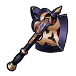

Picador de Mesmerita
Machado · Tier 6 · Nível 18
A mesmerita é famosa por sua capacidade de alterar a mente do usuário, geralmente para pior. Sua fumaça roxa característica está bem visível aqui.
Atributos
Ataque
220
Defesa
55
Economia
Valor
44.500
Tempo de fabricação
1h 10min
XP do comerciante
21.500
Trabalhadores: Carpinteiro 15, Mestre 1
Receita


Marcos do projeto
7
Tempo de fabricação -25%
18
-23 Madeira
32
Valor +25%
50
-1 Pó de prata
80
Chance de qualidade +1